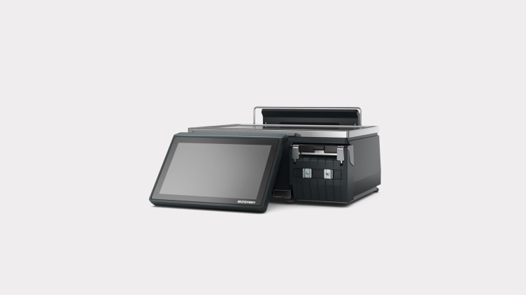

Amazon - Summer 2022
During the summer of 2022, I worked as a Software Development Intern as part of the Whole Foods Market Digital Engineering Servies Organization in Austin, TX. More specifically, I worked on the Retail Applications team working on a project to manage and track the status of the fleet of over 10,000 scales in Whole Foods Market stores.
-
I was introduced to the project and told what goals and features the project would require as well as a very high level design of what the service I would be working on should look like. This first part of the project was to make the management part of the service where a user would be able to perform CRUD operations on scale, store, region, and department entities. After that it was up to me to create the low level design including things like the database schema, deciding what API endpoints would be required, and what the different classes we would need and making sure mocking and stubbing could be easily achieved. I presented my low level design to my team and with some feedback it was approved.
I started with setting up all my infrastructure using CDK to create the DynamoDB, Coral Lambda Endpoint, and more. From there I created the model for the API that defined the endpoints, the function inputs, output, and potential errors. From there I implemented the endpoint functions and wrote unit tests.
Once the functions were completed, I began working on backfilling both the DynamoDB and TimestreamDB that would be used for the next part of the project to track the status of the scales over time and provide metrics about them. This required writing 2 Lambda functions, one for each database, and a python script to convert all the files that held the backfill data into the same format. In the end the backfilled data was over 100,000 datapoints that spanned a year.
Lastly, I implemented more API endpoints that would provide the metrics for the scale status. In total, I created 16 different endpoints for a brand new service for the WFMDES organization. This poroject is a foundation piece for a future project to replace existing 3P software with a 1P solution.

Scale Management Console
Features include:
- 16 API endpoints
- 1 DynamoDB
- 1 TimestreamDB
- 2 Lambda functions and 1 Coral Lambda Endpoint
- 100,000+ data points over 1 year backfilled
- 10,000+ scale, store, region, and department entities
- Dagger dependency injection
- Smithy model
- Infrastructure as code through CDK
- 3,500 lines of code published
At Amazon, I learned so many technical skills including working with AWS for the first time, creating an API, Dagger, mocking and stubbing, and more. This was also the first time I took part in designing a service myself so it was a huge learning experience when I had ambiguity I had to deal with and figuring out how to make the correct decisions in times of ambiguity. Learning NoSQL databases for the first time is a great example of that where I didn't know how a DynamoDB table should look so I started looking at resources and examples to see what best practices are. Overall, it was a great experience to work on a team that is creating and designing new services which was quite different from my past experiences where I was supplmenting existing services. Seeing the Amazon culture and how pervasive the Leadership Principles are was also really interesting and showed me what a different company culture can make on the work experience that you have.